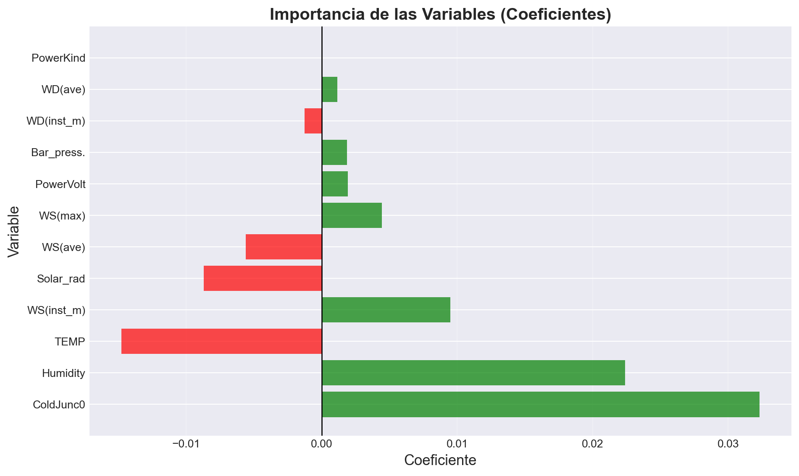

Este documento presenta un análisis completo de regresión lineal utilizando el dataset iige003_carapungo.csv. Utilizaremos Pipeline de scikit-learn para crear un flujo de trabajo robusto y reproducible.
Columnas
No: Número secuencial de la observación.
Date: Fecha de ka observación.
Time: Hora de la observación.
ColdJunc0: Temperatura de la unión fría (referencia para sensores tipo termopar).
PowerVolt: Voltaje de alimentación del sistema o sensor.
PowerKind: Tipo de fuente de energía (por ejemplo, solar, batería, red eléctrica).
WS(ave): Velocidad promedio del viento (Wind Speed average), usualmente en m/s.
WD(ave): Dirección promedio del viento (Wind Direction average), en grados.
Max_time: Tiempo (hora/minuto) en el que se registró la velocidad máxima del viento (WS(max)) durante el periodo de medición.
WS(max): Velocidad máxima del viento registrada en el periodo, en m/s.
WD(most): Dirección del viento más frecuente (Wind Direction most), es decir, la dirección en la que el viento sopló la mayor parte del tiempo durante el periodo de medición.
WS(inst_m): Velocidad instantánea máxima del viento (Wind Speed instantaneous max), en m/s.
WD(inst_m): Dirección instantánea máxima del viento, en grados.
Solar_rad: Radiación solar, normalmente en W/m².
TEMP: Temperatura del aire, en °C.
Humidity: Humedad relativa del aire, en %.
Rainfall: Precipitación acumulada, en mm.
Bar_press.: Presión barométrica (atmosférica), en hPa o mbar.
1. Importar Librerías
Primero importamos todas las librerías necesarias para el análisis.
Code
# Librerías para manipulación de datosimport pandas as pdimport numpy as np# Librerías para visualizaciónimport matplotlib.pyplot as pltimport seaborn as sns# Librerías de scikit-learnfrom sklearn.pipeline import Pipelinefrom sklearn.preprocessing import StandardScalerfrom sklearn.model_selection import train_test_split, cross_val_scorefrom sklearn.linear_model import LinearRegressionfrom sklearn.metrics import mean_squared_error, r2_score, mean_absolute_error# Configuración de estilo para gráficosplt.style.use('seaborn-v0_8-darkgrid')sns.set_palette("husl")
2. Cargar el Dataset
Cargamos el dataset desde el archivo CSV.
Code
# Cargar los datosdf = pd.read_csv("iige003_carapungo.csv", encoding="latin1")# Mostrar información básicaprint(f"Dimensiones del dataset: {df.shape}")print(f"Número de filas: {df.shape[0]}")print(f"Número de columnas: {df.shape[1]}")
Dimensiones del dataset: (133754, 18)
Número de filas: 133754
Número de columnas: 18
C:\Users\Lenovo\AppData\Local\Temp\ipykernel_19092\2803193322.py:2: DtypeWarning: Columns (3,4,6,7,8,10,11,13,14,15,16,17) have mixed types. Specify dtype option on import or set low_memory=False.
df = pd.read_csv("iige003_carapungo.csv", encoding="latin1")
# Reemplazar valores NaN en columnas numéricas por la media de cada columnadf = df.fillna(df.mean(numeric_only=True))
3.6 Valores nulos
Code
# Verificar valores nulos por columnavalores_nulos = df.isnull().sum()print("Valores nulos por columna:")print(valores_nulos)print(f"\nTotal de valores nulos: {valores_nulos.sum()}")
Separamos las variables independientes (features) de la variable objetivo.
Code
variable_objetivo ='Rainfall'# Separar features (X) y target (y)X = df.drop(variable_objetivo, axis=1)y = df[variable_objetivo]print(f"Número de features: {X.shape[1]}")print(f"Features utilizadas: {list(X.columns)}")
Número de features: 12
Features utilizadas: ['ColdJunc0', 'PowerVolt', 'PowerKind', 'WS(ave)', 'WD(ave)', 'WS(max)', 'WS(inst_m)', 'WD(inst_m)', 'Solar_rad', 'TEMP', 'Humidity', 'Bar_press.']
6. División de Datos
Dividimos el dataset en conjuntos de entrenamiento (80%) y prueba (20%).
Code
# Dividir los datosX_train, X_test, y_train, y_test = train_test_split( X, y, test_size=0.2, random_state=42)print(f"Tamaño del conjunto de entrenamiento: {X_train.shape[0]} muestras")print(f"Tamaño del conjunto de prueba: {X_test.shape[0]} muestras")print(f"Proporción: {X_train.shape[0]/len(df)*100:.1f}% entrenamiento, {X_test.shape[0]/len(df)*100:.1f}% prueba")
Tamaño del conjunto de entrenamiento: 107003 muestras
Tamaño del conjunto de prueba: 26751 muestras
Proporción: 80.0% entrenamiento, 20.0% prueba
7. Creación del Pipeline
Creamos un pipeline que incluye: 1. StandardScaler: Normaliza los datos (media=0, desviación estándar=1) 2. LinearRegression: Aplica el modelo de regresión lineal
Code
# Crear el pipelinepipeline = Pipeline([ ('scaler', StandardScaler()), # Paso 1: Normalización ('regressor', LinearRegression()) # Paso 2: Regresión Lineal])print("Pipeline creado con los siguientes pasos:")for nombre, paso in pipeline.steps:print(f" - {nombre}: {paso.__class__.__name__}")
Pipeline creado con los siguientes pasos:
- scaler: StandardScaler
- regressor: LinearRegression
8. Entrenamiento del Modelo
Entrenamos el pipeline completo con los datos de entrenamiento.
Code
# Entrenar el pipelinepipeline.fit(X_train, y_train)print("✓ Modelo entrenado exitosamente")
✓ Modelo entrenado exitosamente
9. Predicciones
Realizamos predicciones con el conjunto de prueba.
# Calcular métricasr2 = r2_score(y_test, y_pred)mse = mean_squared_error(y_test, y_pred)rmse = np.sqrt(mse)mae = mean_absolute_error(y_test, y_pred)# Mostrar resultadosprint("="*60)print("MÉTRICAS DE EVALUACIÓN DEL MODELO")print("="*60)print(f"R² Score: {r2:.4f} → Explica el {r2*100:.2f}% de la variabilidad")print(f"MSE: {mse:.4f} → Error cuadrático medio")print(f"RMSE: {rmse:.4f} → Raíz del error cuadrático medio")print(f"MAE: {mae:.4f} → Error absoluto medio")print("="*60)# Interpretación del R²if r2 >0.9:print("Interpretación: Excelente ajuste del modelo")elif r2 >0.7:print("Interpretación: Buen ajuste del modelo")elif r2 >0.5:print("Interpretación: Ajuste moderado del modelo")else:print("Interpretación: Ajuste débil del modelo")
============================================================
MÉTRICAS DE EVALUACIÓN DEL MODELO
============================================================
R² Score: 0.0164 → Explica el 1.64% de la variabilidad
MSE: 0.0136 → Error cuadrático medio
RMSE: 0.1165 → Raíz del error cuadrático medio
MAE: 0.0231 → Error absoluto medio
============================================================
Interpretación: Ajuste débil del modelo
10.2 Validación cruzada
Evaluamos el modelo con validación cruzada de 5 particiones.
Los coeficientes indican la importancia y dirección del efecto de cada variable.
12.1 Tabla de coeficientes
Code
# Extraer el modelo del pipelineregressor = pipeline.named_steps['regressor']# Crear DataFrame con coeficientescoef_df = pd.DataFrame({'Variable': X.columns,'Coeficiente': regressor.coef_}).sort_values('Coeficiente', key=abs, ascending=False)print("COEFICIENTES DEL MODELO")print("="*60)print(f"Intercepto: {regressor.intercept_:.4f}\n")print("Coeficientes por variable (ordenados por magnitud):")print(coef_df.to_string(index=False))
# Gráfico de barras horizontalesplt.figure(figsize=(10, 6))colors = ['green'if x >0else'red'for x in coef_df['Coeficiente']]plt.barh(coef_df['Variable'], coef_df['Coeficiente'], color=colors, alpha=0.7)plt.xlabel('Coeficiente', fontsize=13)plt.ylabel('Variable', fontsize=13)plt.title('Importancia de las Variables (Coeficientes)', fontsize=15, fontweight='bold')plt.axvline(x=0, color='black', linestyle='-', linewidth=1)plt.grid(True, alpha=0.3, axis='x')plt.tight_layout()plt.show()

Figure 6: Importancia de las variables según sus coeficientes
12.3 Interpretación de coeficientes
Code
print("\nINTERPRETACIÓN DE COEFICIENTES:")print("="*60)print("Coeficientes positivos → Aumentan el valor de la variable objetivo")print("Coeficientes negativos → Disminuyen el valor de la variable objetivo")print("Mayor magnitud → Mayor impacto en la predicción\n")# Variables con mayor impactoprint("Top 3 variables con mayor impacto (valor absoluto):")for idx, row in coef_df.head(3).iterrows(): direccion ="aumenta"if row['Coeficiente'] >0else"disminuye"print(f" {row['Variable']}: {direccion} la predicción en {abs(row['Coeficiente']):.4f}")
INTERPRETACIÓN DE COEFICIENTES:
============================================================
Coeficientes positivos → Aumentan el valor de la variable objetivo
Coeficientes negativos → Disminuyen el valor de la variable objetivo
Mayor magnitud → Mayor impacto en la predicción
Top 3 variables con mayor impacto (valor absoluto):
ColdJunc0: aumenta la predicción en 0.0323
Humidity: aumenta la predicción en 0.0224
TEMP: disminuye la predicción en 0.0148
Variable objetivo: La variable objetivo es: Rainfall.
Preprocesamiento: El pipeline incluye StandardScaler para normalizar los datos.
Interpretación: Los coeficientes están en escala estandarizada debido al StandardScaler.
Interpretación Final 🧠
El modelo de regresión lineal desarrollado permite predecir la precipitación acumulada (Rainfall) a partir de variables meteorológicas medidas en la estación.
El análisis de los coeficientes revela qué variables tienen mayor impacto en la predicción de la lluvia. Variables como la humedad, la temperatura y la radiación solar suelen ser determinantes en los procesos de precipitación, lo que se refleja en la magnitud y el signo de sus coeficientes.
En conclusión, el modelo es una herramienta útil para estimar la precipitación a partir de datos meteorológicos, aunque su precisión depende de la calidad y representatividad de los datos. Se recomienda complementar este análisis con modelos más complejos o incorporar más datos para mejorar la capacidad predictiva si es necesario.